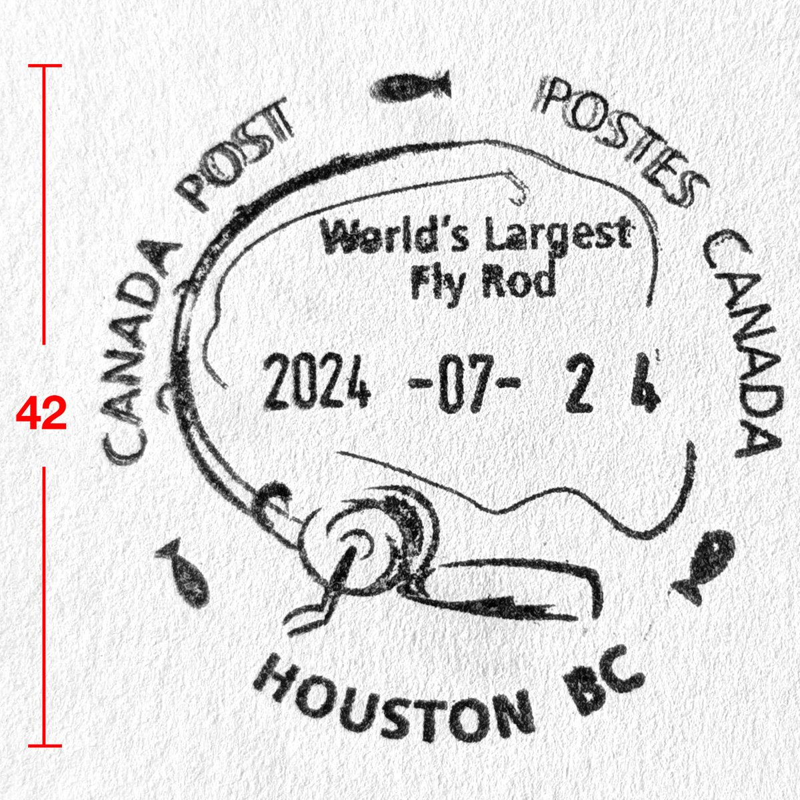

Houston PO pictorial cancel
The World's Largest Fly Rod
- Status
- Active
- Run dates
- ? to present
- Design
- "The World's Largest Fly Rod"; fly-fishing rod
- Ink colour
- Black
- Designer
- Unknown
- Post office
- Houston PO
3232 HWY 16
Houston, BC
V0J 1Z0 - Subjects
- fishing, fly rod
Collect it by mail. Send your stamped covers, with a stamped return envelope, to the post office address above. How to collect pictorial cancels by mail · en français
 Terrace STN MainGoat
Terrace STN MainGoat Prince George STN AThe Royal Infant / La poupon royal
Prince George STN AThe Royal Infant / La poupon royal Charlie Lake POFish
Charlie Lake POFish Campbell River STN AFirst Nation
Campbell River STN AFirst Nation Whistler POSARA BURKE
Whistler POSARA BURKE Fort Nelson PONORTHERN ROCKIES REGIONAL DISTRICT
Fort Nelson PONORTHERN ROCKIES REGIONAL DISTRICT